The circuit shown below is a silicon transistor amplifier which takes one
input and generates two outputs. Assume 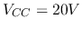, 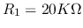,
 ,
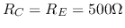,
,
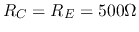,  .
.
 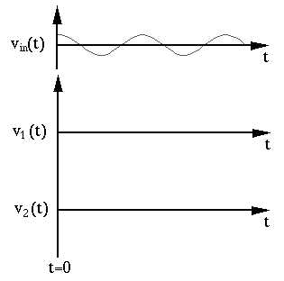
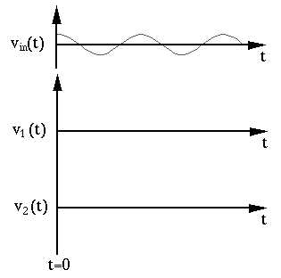
Solution:
Apply Thevenin theorem to base circuit to get
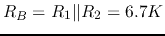, 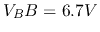.
Find the DC operating point 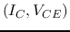 of the transistor circuit
given below, where
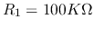,
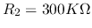,
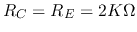,
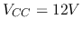, and  . If you find the DC operating point is not
in the middle of the linear region of the output characteristic plot,
modify
. If you find the DC operating point is not
in the middle of the linear region of the output characteristic plot,
modify  so that the DC operating point is in the middle of the linear
region (to maximize the dynamic range of the AC output).
so that the DC operating point is in the middle of the linear
region (to maximize the dynamic range of the AC output).

Solution:
Find the load line: When 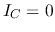, 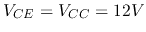, when 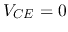, 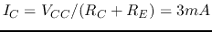
Now we modify  to move Q-point to the middel point where 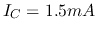.
to move Q-point to the middel point where 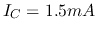.

Keep your answer accurate, concise, and to the point.

Hint: Draw the input and output characteristic plots of the transistor circuit to visualize how each of the two types of distortion can be avoided.
Solution:

Solution: